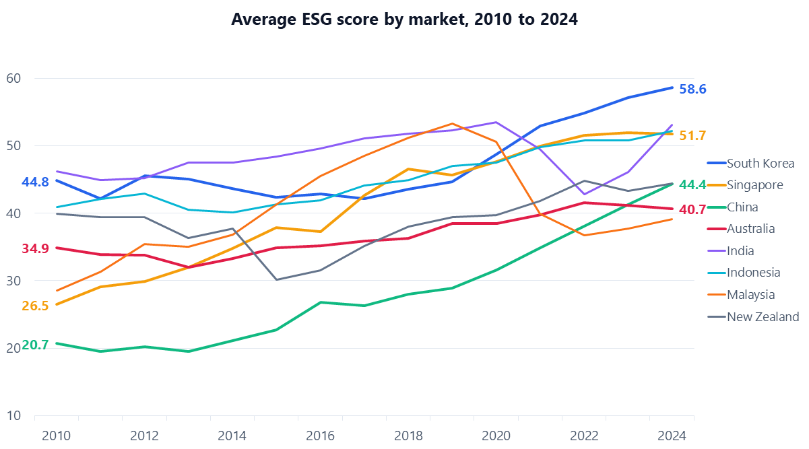
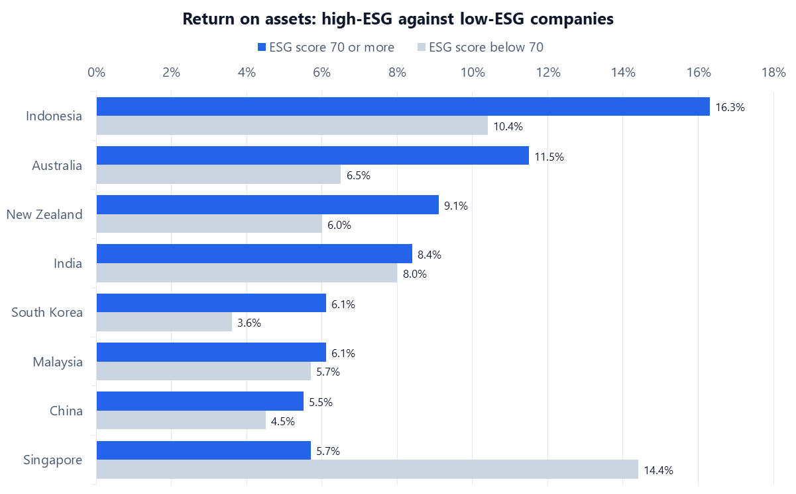

Tableau · Curtin University · 2026
Do companies with better ESG scores actually earn more?
A three-dashboard Tableau Story and a business analyst report on 16,752 company-year records from eight Asia-Pacific markets, 2010 to 2024. It asks whether ESG performance tracks profitability and valuation.
- Problem
- Do companies with better ESG scores also do better financially, across eight Asia-Pacific markets?
- What I did
- Sole author: data filtering, calculated fields, three linked dashboards, a Tableau Story and a 1,000-word analyst report. Curtin University, 2026.
- Tools
- Tableau Desktop · Tableau Public · calculated fields · parameters · dashboard actions · forecasting
- Result
- ESG and profitability are only weakly linked: ESG score explains almost none of the difference in return on assets (R² 0.02, n = 16,658). China’s average ESG score rose from 20.7 to 44.4 between 2010 and 2024.
8 markets, 2010–2024
weak positive, n = 16,658
2010 to 2024

What I found
-
ESG scores rose almost everywhere, but from very different starting points. Across the filtered sample the average moved from 36.5 in 2010 to 43.7 in 2024. South Korea led throughout, finishing at 58.6. China started lowest at 20.7 and more than doubled to 44.4. Singapore went from 26.5 to 51.7. Australia moved only from 34.9 to 40.7. The developed-versus-emerging split the brief expected is weaker than I assumed: Developed APAC averages 41.1 against 39.9 for Emerging APAC over the period.
-
Market value and ESG performance are different things. Market capitalisation is concentrated in China (about 44% of the summed total) and India. The three largest industries by market cap (Metals & Mining (38.6), Beverages (33.0) and Oil, Gas & Consumable Fuels (41.8)) sit close to or below the sample average ESG score of 40.4. Governance is the strongest pillar in 21 of the 22 industry groups (sample average 47.9, against 33.9 for Environmental and 39.2 for Social; REITs are the exception, where Social leads). Environmental is weakest in Media & Entertainment (17.1) and Software & Services (23.9), not just the heavy-emitting sectors.
-
Governance structure explains less than I expected. Firms where the CEO also chairs the board score almost the same as those that separate the roles: a median of 38.1 versus 38.4 (3,332 and 13,420 company-years). Female board share is positively related to ESG at the firm level, but weakly: R² of roughly 0.01 across 2,922 firms. Controversies show bigger differences: 26.8% of Telecommunication Services company-years and 17.0% of Automobiles & Components had an active controversy, against 0.6% for REITs, and 1,410 controversy company-years overall.
-
Higher ESG goes with slightly higher ROA, but the effect is small and not uniform. With ROA filtered to −1 to +1 to remove extreme outliers, the company-year trend line is positive but explains almost nothing: R² of 0.02 (r = 0.14, n = 16,658). At the default threshold of 70, “High ESG” firms beat “Low” firms on aggregate ROA in seven of the eight markets: Australia 11.5% against 6.5%, Indonesia 16.3% against 10.4%. But Singapore runs the other way (5.7% against 14.4%), and only 1,451 of the 16,752 company-years clear the threshold at all.

Aggregate ROA (sum of EBIT over sum of total assets) for company-years at or above an ESG score of 70 versus below, 2010–2024. This is the country-level High-versus-Low view from Dashboard 3 at its default threshold. New Zealand’s “High” group is 28 company-years and Singapore’s is 61, so read those two rows loosely. -
The forecast says ESG keeps rising and valuation stays flat, with wide error bars. Tableau’s dual-axis forecast extends average ESG score and average Tobin’s Q to 2028 with 95% prediction bands. ESG continues its gradual climb. Tobin’s Q stays around the 0.5 it has held all period (0.55 in 2010, 0.51 in 2023). The bands are wide enough that the forecast is a direction, not a number, and the caption says so.
Explore the dashboard
The Story is published on Tableau Public. It has a global country filter, highlight actions, and a map-to-dashboard action: selecting a country on the Dashboard 1 map filters Dashboard 2. On Dashboard 3 the ESG High Threshold slider re-classifies every company-year and redraws the last two charts. Move it to see how much the “High ESG firms do better” result depends on where the line is drawn.
If the embed does not load, open it directly on Tableau Public.
The problem
ESG disclosure is going mandatory across the region: AASB S1/S2 in Australia, XRB standards in New Zealand, SGX rules in Singapore, SEBI’s BRSR Core in India, HKEX and CSRC guidance in China, and the KSSB in Korea, all converging on the ISSB standards. So the question for an investor or a board is simple: do companies that score well on ESG also do better financially, and does that hold across very different markets?
The brief asked for a Tableau Story of exactly three dashboards that build on each other. I framed them as three steps:
- Market landscape: where is the market value, how do ESG scores differ by country, and what is each market’s industry mix?
- Governance drivers: do board gender diversity, CEO duality, industry and controversies explain the variation in ESG scores?
- Financial outcomes: is ESG associated with return on assets, Tobin’s Q and market-to-book, and what does a forecast to 2028 look like?
How I did it
One filter, applied everywhere. The non-null ESG filter and the 2010–2024 year range attach to every worksheet through the data source, so no chart can accidentally include unscored firms. The brief required it. It also keeps a 237,506-row panel responsive on Tableau Public.
Fourteen worksheets, three dashboards, one Story. Dashboard 1: the KPI table, the ESG trend line by country, a filled map of total market cap in USD billions, the top ten industries by market cap coloured by ESG score, and a 100% stacked bar of each country’s industry composition. Dashboard 2: the E/S/G pillar stack by industry group, the ESG-versus-female-board scatter with a trend line, the country-by-year heatmap, a box plot of ESG score by CEO duality, and the controversy count by industry group. Dashboard 3: the ROA-versus-ESG scatter, the dual-axis forecast, the High/Low bar comparison and the country-level High/Low view.
Parameters and actions instead of static views. The ESG High Threshold parameter drives one calculated field that two charts depend on, so the What-If scenario is a single slider. Highlight actions link the charts within each dashboard. A filter action carries a country selection from the Dashboard 1 map into Dashboard 2. Each Story point has a caption I wrote to state its insight in one or two sentences.
Forecast settings. Tableau’s automatic exponential smoothing with seasonality detection, projected four years to 2028, with 95% prediction bands shown and the last (partial) year excluded from the model fit.
The data
A panel of Asia-Pacific listed companies: nine economies, 2001 to 2024. That is 237,506 company-year observations across 16,322 firms. Each carries firm-level financials, ESG scores and pillar sub-scores, an ESG controversies score, and governance variables such as board size, female board share and CEO duality.
ESG scores exist only for a subset of larger listed firms. So the first step, and the first thing the markers checked, was a global filter to company-years with a non-null ESG score, restricted to 2010–2024. That leaves 16,752 company-years from 2,922 firms. Two consequences matter throughout:
- Bangladesh drops out entirely. It has 3,134 company-years in the raw panel but none with an ESG score, so every “nine countries” in the brief is eight in practice.
- Coverage grows sharply over time. There are 342 ESG-scored company-years in 2010 and 2,842 in 2023. China alone goes from 25 scored firms in 2010 to 961 in 2024. Any “trend” is partly a change in who is being scored.
The brief defined the calculated fields; I built them as specified: ROA as SUM(ebit) / SUM(at); Tobin’s Q as (SUM(MCAP)/1,000,000 + SUM(lt)) / SUM(at); MTB as (SUM(MCAP)/1,000,000) / SUM(ceq); a Market Group field labelling Australia, New Zealand, Singapore and South Korea as “Developed APAC”; a Has Controversy flag for CONT < 100; and an Above Threshold field driven by an ESG High Threshold parameter (50 to 80 in steps of 5, default 70). The MCAP division is the trap here: market cap is in dollars, the balance sheet in millions. Skip it and Tobin’s Q lands in the trillions.
Limitations
- Correlation, not causation. Nothing here shows that improving an ESG score raises returns. Larger, more profitable firms are more likely to be scored at all, and better resourced to score well.
- The sample is who gets scored, not the market. ESG coverage is 7% of the raw panel and skews to large firms. Bangladesh is absent. New Zealand has 499 company-years, only 28 above the threshold. Coverage jumps from 342 company-years in 2010 to 2,842 in 2023, so part of every time trend is composition change, not change within firms.
- 2024 is incomplete. India has 16 company-years in 2024 against 283 the year before, so the 2024 dip-and-recovery in some lines is a reporting-lag artefact. The forecast drops the last year for this reason.
- Ratios depend on unit assumptions and are outlier-sensitive. I followed the brief’s MCAP conversion but did not independently verify the currency of every balance-sheet item. ROA is filtered to −1 to +1 in the scatter and shown as a sum-over-sum aggregate elsewhere; the two do not give identical numbers.
- “High ESG” is a choice. A firm scoring 72 is High at threshold 70 and Low at 75. Moving the slider between 50 and 80 changes both group sizes and, in some markets, the direction of the result, which is why the parameter is on the dashboard rather than fixed.
- ESG ratings themselves are contested. LSEG scores are one provider’s view. Providers disagree, scores are backfilled, and the controversies score runs on an inverse scale (100 = no controversy) that is easy to misread.
Key takeaways
- The filter decides the story. Only 16,752 of 237,506 company-years have an ESG score, and Bangladesh has none, so the brief's nine countries became eight. Checking the sample first stopped me from reporting the wrong scope.
- A positive trend can still explain almost nothing. ESG and ROA move together, but with R² of 0.02. Reporting the size of a relationship, not just its direction, keeps conclusions honest.
- Averages hide exceptions. High-ESG firms earned more in seven of eight markets, but Singapore reversed. Breaking results down by market showed what one overall number could not.
- Good dashboards guide the reader. Linking three dashboards with actions lets someone move from the big picture to one market or firm without getting lost.
References and data sources
- LSEG Workspace (formerly Refinitiv): ESG scores, pillar scores, controversies and governance variables. lseg.com
- Compustat Global, S&P Global Market Intelligence: firm financials (EBIT, total assets, market value).
- My Tableau Story for this project. Open on Tableau Public
Who provided the data: The combined dataset was supplied to students by the unit at Curtin University, drawn from LSEG Workspace and Compustat Global under the university's licence. The raw data is not public.